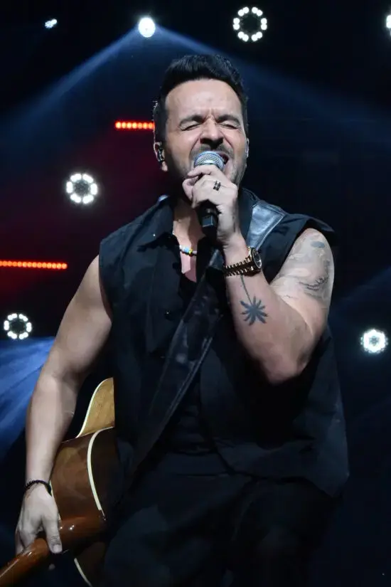

Luis Fonsi llena de emoción a los dominicanos con sus “25 años Tour”.

Con el “corazón en la maleta” y una guitarra al pecho, el cantante puertorriqueño Luis Fonsi subió al escenario del Pabellón de Voleibol en Santo Domingo para
reencontrarse con el público dominicano.
Vestido de negro, el intérprete de 46 años cautivó a los miles de asistentes que, desde la primera nota se convirtieron en el coro perfecto para sus icónicos éxitos, desde los clásicos como “Imagíname
sin ti” hasta los más recientes
como “Pasa la página”.
“Buenas noches, Santo Domingo. Siempre es un honor estar en esta tierra, que desde el inicio de mi carrera me abrió las puertas y me abrazó”,
expresó Fonsi al saludar al público.
El concierto, parte de su gira “25 Años Tour” (25th Anniversary Tour), marcó un show muy significativo
en República Dominicana.
Fonsi estuvo acompañado por una banda de cinco músicos y un cuerpo de baile de seis integrantes,quienes
añadieron energía y dinamismo al concierto.